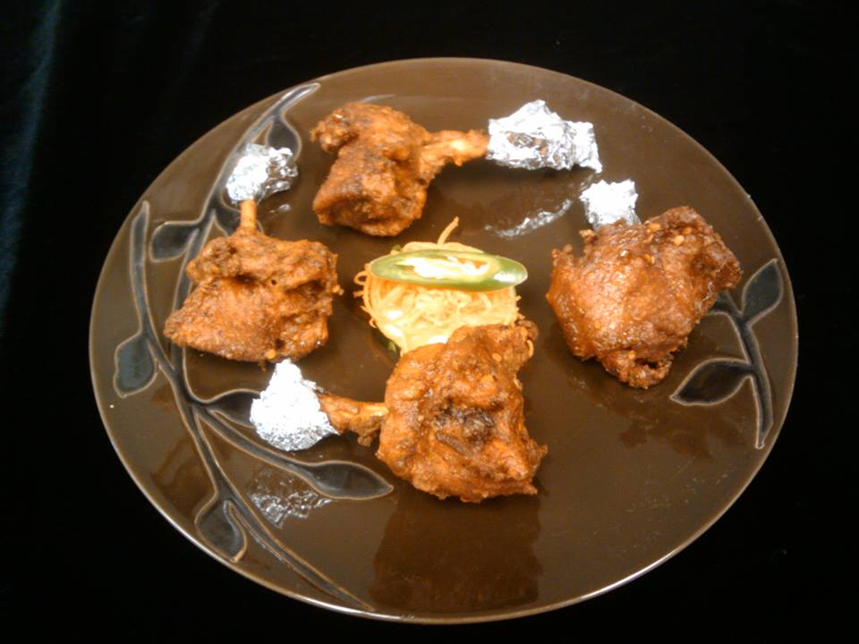
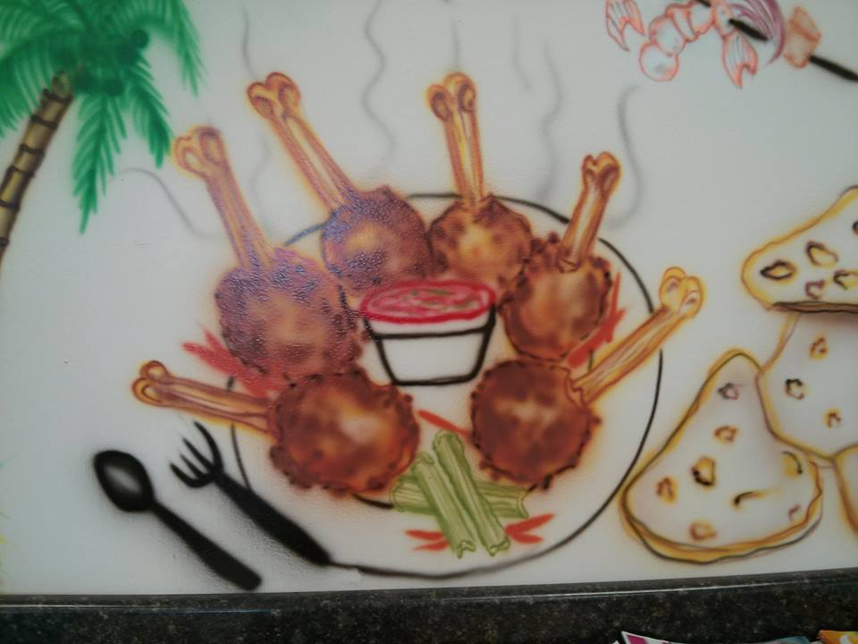
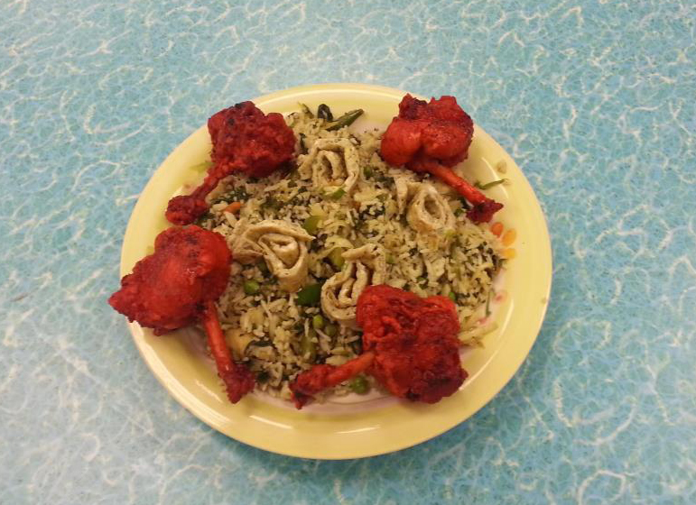

Blurb about the restaurant. Locavore leggings forage, mumblecore XOXO sriracha narwhal Echo Park you probably haven't heard of them Banksy typewriter pop-up. Godard aesthetic gluten-free flexitarian, craft beer iPhone you probably haven't heard of them ugh umami selfies. Locavore 8-bit trust fund, 3 wolf moon four loko fingerstache literally semiotics. Pitchfork chambray pop-up scenester, Williamsburg polaroid wayfarers. Typewriter pug skateboard cornhole PBR McSweeney's. American Apparel Terry Richardson biodiesel Etsy, Schlitz brunch artisan Odd Future fingerstache. Biodiesel 8-bit VHS disrupt, tofu post-ironic food truck 3 wolf moon try-hard kale chips jean shorts Schlitz.